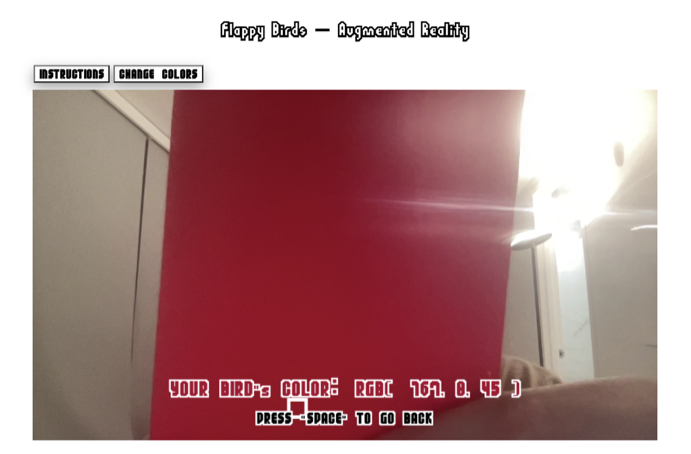

This project is a recreation of the game called Flappy Birds. Different front the original, this game adds the motion tracking and color tracking features. Players will need to use their left or right hands to move the bird up or down By clicking the "CHANGE COLORS" button on the top, the players will be able to change the bird's color. The program will catch the color of the place where the players clicked (See Picture 1). There are three levels of the game and the differences between each levels are the distance between upper and lower obstacles.
Picture 1
My Process:
1. I firstly wrote the codes that integrated the live video into the website. Then, I resize the screen displayed and set the areas for the motion detection. I set the threshold to be 20 in order to make the bird move more quickly to avoid the obstacle. Then, I created the bird character that will be controlled by the motion tracking mechanism.
2. I created classes for coins and obstacles. Next, I made them start from the far right of the canvas and continuously move towards left. They will disappear after they reach the left side of the screen.
3. I created the points system, once the bird passes one obstacle, the point will be added one. Collecing one silver coin will add 1 point to the points of coins and collecting one gold coin wiull add 2 points to the points of conis. After the gave is over, the total points will be the points of passing obstacles plus the points of coins collected. Then, the players will receive a metal according to their points. I also use the local storage to track the highest point made by players
4. I created the color changing page, where users can click on the screen (which displayed what the webcam captured). The color tracking function will automatically get the rgb values of the place where the players clicked and the birds' color will change accordingly.
ENJOY THE GAME!!